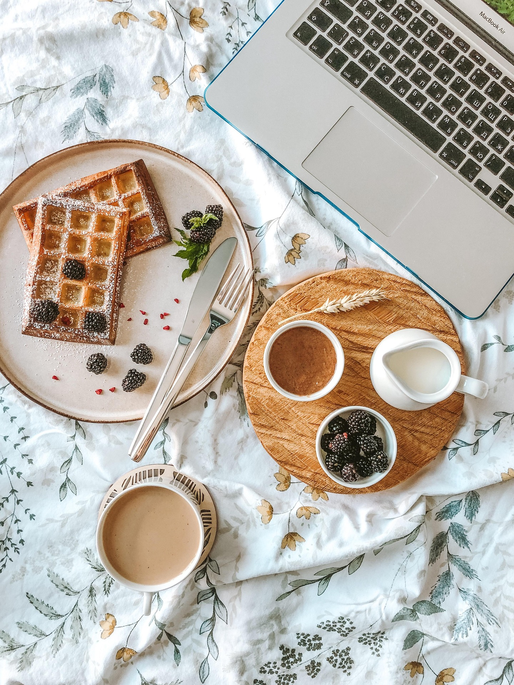

Una historia sobre la comida
No todas las historias sobre alimentación comienzan con una dieta.
A veces comienzan con una persona que simplemente dejó de sentirse bien.
Desliza
Una historia sobre la comida
A veces comienzan con una persona que simplemente dejó de sentirse bien.
Todos creemos saber alimentarnos.
Pero no todos nos sentimos bien.
María pensaba que necesitaba bajar de peso. En realidad, necesitaba dejar de vivir peleando con la comida. Como ella, muchas personas creen que el problema es el número de la báscula, cuando debajo hay emociones, hábitos y rutinas que nadie les enseñó a mirar.
Cada plato guarda una rutina, una emoción, una cultura, una manera de estar en el mundo.

No vine a prohibirte alimentos. No vine a juzgar tus decisiones. Vine a ayudarte a entender qué necesita tu cuerpo.
El camino cambia lo que sientes: cansancio, culpa y dietas → energía, equilibrio y hábitos que se sostienen.
Un camino claro, sin promesas milagrosas. Un paso a la vez.
Nos conocemos. Hablamos de tu historia y de aquello que te trajo hasta aquí.
Miramos juntos tus hábitos y tu contexto, sin juicios ni etiquetas.
Diseñamos una forma de comer que se ajuste a tu vida real, no a una ideal.
Ajustamos sobre la marcha. El cambio sostenible se construye acompañado.
“No me dieron una dieta. Me devolvieron la calma a la hora de comer.”
La alimentación no cambia una vida por sí sola. Los hábitos sí.
Nota para configurar: este botón puede enlazarse posteriormente a WhatsApp o al sistema de reservas.